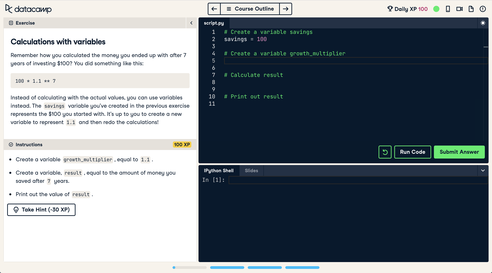

Projects too complex for stakeholder understanding?
Documentation keeping your team out of sync?
Systems Engineering might be right for you!
What's a system?
Before diving into Systems Engineering, let's build some context. First we need to understand what a system is.
What is a System?
First, let's build context as to what we mean by "system". Below is an academic definition of Systems Theory:
Systems theory "is a conceptual framework based on the principle that the component parts of a system can best be understood in the context of the relationships with each other and with other systems, rather than in isolation" (Wilkinson, 2011).
Albeit longwinded, this definition tells us that:
A system is a framework--something we observe (weather system), or physical (an audio system). Different types will be discussed below.
Systems theory focuses on a system's relationships with other systems. This implies there are lots of systems--each of which is referred to as a System Element.
Today the International Council on Systems Engineering (INCOSE) manages standardizations for Systems Engineering, with 70+ chapters worldwide. INCOSE defines Systems Engineering in relatively simplistic terms:
"The realization of successful systems" (2019)
Of course, this definition does not mean much without any context.
Holt and Perry expand on the definition, "a multi-disciplinary, common-sense approach that enables the realization of successful systems" (2019).
To better understand systems and system elements, let's use a grocery store as an example. In a grocery store, various departments such as the bakery, produce, and meat sections function as system elements within the larger grocery store system. Each of these departments can be considered a system element.
We can "zoom in" to break a system down into smaller system elements--like the various departments in a grocery store. We can also "zoom out" to understand the operations of the grocery store's business at a market, district, national, or global level.
Systems can come in different types. Peter Checkland's system classifications divide systems into five different types, and is one of the most widely used definition for systems (Holt, 2023). Below are examples of each type of system.
Checkland's Five System Types
Natural Systems
Systems beyond our control, such as the weather, time, and natural disasters.
Designed Physical Systems
The most common definition for a system--hardware. This can range from computers, tablets and phones to cars, planes, and satellites.
Designed Abstract Systems
Systems without a physical form used to explain ideas or concepts. This document's topic--Model Based System Engineering (MBSE)--is one example of a designed abstract system. Philosophical thought experiments and mathematical equations also fall under this classification.
Human Activity Systems
People-based systems, such as social groups, political systems, and services for people.
Transcendental Systems
Systems beyond human understanding--deities, black holes, and how AI works.
Systems can fall into multiple classifications. In our grocery store example, the store is both a designed physical system and an activity system. No matter what type a system is, they all have a common set of characteristics (Holt, 2023). The following list introduces each of these characteristics.
System Characteristics
System Elements
The parts that make up a system. In our grocery store example, the bakery, produce, and meat sections are all elements of the grocery store system.
System Stakeholders
The people who have an interest in the system. For a grocery store, stakeholders include customers, employees, and suppliers.
System Attributes
The properties or qualities of a system. A grocery store's attributes might include its size, location, and product variety.
System Boundaries
The limits that define what is inside and outside the system. The physical walls of our grocery store defines the physical boundaries of the grocery store's system.
System Needs
The requirements or demands that a system must satisfy. For our grocery store, needs includes providing fresh products, ensuring customer safety, and maintaining profitability.
System Constraints
The limitations or restrictions that affect the system. Our grocery store's constraints include budget, regulatory requirements, and physical space.
In systems theory, understanding these characteristics assists in analyzing and designing successful systems.
Systems Engineering
Systems Engineering is, simply put, the use of the systems above to design and manage complex systems throughout their existence, or life cycle. The more complex a system is, the more difficult it is to manage without an organized or structured approach.
Systems engineering provides structured processes and methodologies to manage complexity. This, in turn, enhances communication, enabling a shared understanding among stakeholders. With systems engineering principles, organizations can improve project outcomes, resulting in successful systems that meet stakeholder needs.
Identify the need for system engineering:
In the text Systems engineering demystified: A practitioner's handbook for developing complex systems using a model-based approach, there are "three evils" to be aware of in Systems Engineering: Complexity, Understanding, and Communication (Holt, 2021).
Complexity
Systems are becoming increasingly complex, making them difficult to manage without a structured approach.
Understanding
Different stakeholders may have different interpretations of the same system, leading to misunderstandings.
Communication
Effective communication is crucial for successful systems engineering, but it can be challenging due to the complexity and diverse perspectives of stakeholders.
Tree Swing Cartoon: Stakeholders "understand" the same project in different ways. In the cartoon below, each panel represents a radically different--albeit exaggerated--understanding of a "simple" tire swing.
The tree swing cartoon is one of my favorite examples of how misunderstandings can deny us of our success. It also shows just how complex systems can be, even something as simple as a tire swing.
Successful communication requires both the sender and receiver to understand the definitions and semantics of words used. Systems engineering oftentimes includes the use of domain-specific-language like SysML to prevent communication mishaps.
When multiple documents defining a single system, it is unlikely everyone is one the same page--literally and figuratively. With multiple "sources of truth" that are unlikely to all be up to date, out-of-sync teams can make some very costly mistakes.
examples:
NASA's $125 Systems Engineering mistake: NASA and Lockheed Martin used different units of measurements (metric Newtons and English units, respectively) in navigation calculations for the Mars Climate Orbiter. This mistake costed NASA $125 million in September of 1999. (https://www.science.org/content/article/english-metric-miscue-doomed-mars-mission)
A roller coaster's 1995 master plans were converted from English to Metric units in 2002. With multiple versions of the ride's plans, conversion errors were made, and the wrong size axel was ordered. Two years later, the roller coaster, derailing Tokyo Disneyland's Space Mountain roller coaster. (https://www.cnn.com/TECH/space/9909/30/mars.metric.02/), (https://spacemath.gsfc.nasa.gov/weekly/6Page53.pdf)
Different jobs, responsibilities, and backgrounds, and interests provide us with different insights and different viewpoints. In other words, context differs between people, creating (excellent) opportunities of communication breakdown. While this can create a superior product that one person alone cannot create, this can also create different understandings.
All of these different people are stakeholders, and generally fall into three categories:
Customers
People interacting with the system's end product--the main beneficiaries.
Suppliers
People that develop and deliver the system--manufacturer employees such as engineers.
External
People in roles that can influence the limits or restrict the system in some way--clients, auditors and investors.
Each of these stakeholders naturally have different understandings; that is to say, they have different contexts. The meaning of a statement, a problem or a need of a system might are interpreted differently, like the tree swing cartoon above.
Communication Breakdown
Communication breakdown can happen...
person-to-person
organization-to-organization
system-to-system/inside a system
Systems engineering provides structured processes and methodologies to manage complexity, enhance communication, and ensure a shared understanding among stakeholders. By adopting systems engineering principles, organizations can improve project outcomes and deliver successful systems that meet stakeholder needs.
One way to mitigate these communication breakdowns and handle the complexity of modern systems is to move away from document-based approaches and towards specific, rigorous models. Standardizations such as SysML and methodologies like MBSE provide frameworks to achieve this.
Model-Based Systems Engineering
Model-Based Systems Engineering (MBSE) is the formalized application of modeling to support system requirements, design, analysis, verification, and validation activities beginning in the conceptual design phase and continuing throughout development and later life cycle phases (INCOSE, 2019). Essentially, MBSE creates a "living" blueprint of the system that helps align all stakeholders.
Defining Modeling with MBSE
In MBSE, a "model" isn't just a 3D shape or a toy replica. Instead, it serves as a simplified abstraction of a system that represents reality for a specific purpose. These models act as a single source of truth, reducing the ambiguity found in written documents and ensuring that when one part of the system changes, the impact is immediately visible across the entire design.
Designing for Human Minds
In this blog post, we will cover how to support user thinking in digital design. This entails making a digital system "usable" by taking users' memory, habits, mental shortcuts, and shape interactions into account as we design a digital system.
There's more to "usability" than a system that works--functional, accurate, and outputs correct information.
A digital system also needs to be easier than doing the same task "by hand", without the system.
Without this key feature, the system has no real value, as it doesn't benefit the user.
Introduction: Designing for the Human Mind
How do we make a digital system more usable? In short: by decreasing the user's cognitive load. Users have a limited attention span; they expect digital systems to do the "heavy lifting" so to speak. Take, for example, this interface of DataCamp, which is designed to teach users about programming languages.

This interface provides users with several panels. Each panel has a specific purpose, each with features that reduce what the user has to commits to memory.
A good digital system guides users through their interaction; it supports the users' natural thinking process, keeping them thinking and engaged on the problem at hand--not how to use the tool to address the problem at hand. It does so by using mental shortcuts, borrowing from natural human tendencies users are likely already fluent in. By doing so, the user's journey isn't led astray, lost, or confused; they are guided by instinct already ingrained in them.
The panels are arranged in a way that flows in the same direction as we read a paper or a comic (upper left to lower right). This supports the user's thinking process. A user will naturally move between panels from the upper left to lower right--the same order as each panel will be needed by the user.
In this instance, the first part of the user's journey requires context and instructions. Without this information, the user will be lost as to what to do. The "hint" button lies at the bottom of the instructions; as a hint is also a form of instruction, it makes the most sense to group it with other instructions.
The upper right panel (with the scrypt.py tab) introduces the user to a simplistic coding environment. Here the user is exposed to key elements of a real coding environment, but is stripped of features unnecessary for the task at hand. By reducing the amount of elements commonly found in a full fledged, plugin cluttered IDE (Integrated Development Environment--powerful text editors for coding), the cognitive load is reduced, allowing the user to focus on the problem at hand.
A user should need to commit memory to how to use the digital system. Designs should guide users through the process of the system; the ideal system needs no explanation (intuitive design) and is essentially invisible to the user. This is oftentimes accomplished with pictures people recognize from other systems or the real world, and and intuit their function based on their past experiences.
Cognitive Bottleneck
On the limitations of working memory and how long-term memory functions.
Humans have two types of memory: working memory (short term) and long-term memory. (Yablonski, 2020). By using users' past experiences, designers can "offload" users' need to think about the digital system, allowing users to concentrate in full on the task at hand.
First, let's take a closer look at the two types of memory.
Working memory
More commonly known as "short term-memory", this memory is the memory we work are actively working with. Rather than a separate entity, our short-term memory is a combination of our perception, attention, and our long-term memory (Johnson, 2021).
For designers, it is important to keep in mind the working memory is of low capacity and is volatile (i.e. fickle). The average capacity of one's working memory works works out to 3-5 items (Broadbent, 1975; Mastin, 2010). While this might seem like very little to work with, there are many tricks designers can utilize to our long-term memory.
Long-Term Memory
Pattern recognition drives our long-term memory. As biological beings, it is not files of documents like computers but a neural network distributed throughout the brain (Johnson, 2021). This means our long-term memory holds a great deal of information, but is also prone to errors and biases.
Tesler's Law
On the Management and Conservation of Complexity
"For any system there is a certain amount of complexity that cannot be reduced." (Yalblonski, 2020).
While a designer's goal is to solve a problem statement, making users' lives easier, it isn't quite possible to "design away" all of the complexity of a problem (Yalblonski, 2020). The mental load of a problem can be significantly reduced, but designers must be careful not to oversimplify the digital system, less the digital system loses its effectiveness or capabilities. In other words, digital systems will always have a degree of mental burden due to the complexity of the problem statement.
When a problem statement is simplified as far as possible, the remaining mental load must be carried by either the user or the digital system. Designers might use the digital system's user interface (UI) or other elements along the users' journey, within the process or workflow.
In the Datacamp example from earlier, we can see many features that reduce the mental load of the user. Within the instructions, key words are formatted with a black background and a font associated with computer command line interfaces (CLI). This formatting is naturally recognized to the user as "code" that is to be used in the script to the right.
Another example of "mental off-loading" is tucked away in a tab in the lower right corner--The tab labeled "slides". In the event a user (which, in this case, is learning new concepts in code) is likely to need to refer to the learning material from time to time (I know I do!). Rather than leaving the user to navigate back and forth between videos, cheat sheets, third-party sources and/or AI, all of the information necessary for the problem is provided within the interface.
With the rapid advancements of artificial intelligence (AI) and machine learning (ML), possibilities of digital systems have tremendously expanded. Rather than users needing to think in terms of "computer language" as they work, users can use natural language (i.e. layman's terms) to describe the desired end results--and oftentimes receiving the desired output in a a prompt or two.
Designers can also use AI and ML in other ways--ML can be used on the backend (i.e. "behind the scenes") to better interpret user intentions, needs and interests via context, retrieved and training data.
In the Datacamp example, an AI element is used to explain errors. Running a script and receiving an error, an option to use AI to explain the error appears near the hint button, listing exactly what went wrong and how to fix the error--reducing the users' mental load of flipping through resources to find an answer to their (long and tedious) error message.
In short, Tesler's law offers designers and developers a guideline to how complexity is managed. In digital designs, we must understand there is a degree of complexity that cannot be reduced without losing the digital system's required functionality. While AI and ML are changing what complexity can and can not be managed with digital systems, it is important not to become overdependent on AI and ML, less we fail to properly manage the complexity of our problem statement.
Recognition vs. Recollection
On the ease of recognition and the difficulties of recollection
In Designing with the Mind in Mind, Johnson dedicates an entire chapter on two simple facts: Recognition is Easy; Recall is Hard (2021). These concepts are are important to designers to ensure users' working memory is free for the task at hand (which often requires recollection), meanwhile the operation of the digital system utilizes users' long-term memory with easily recognizable elements.
The Easy: See & Choose
An excellent example of a design that utilizes the advantages of recognition to reduce users' cognitive load is graphical user interfaces, or GUI for short (Johnson, 2021). By using icons or pictures, which we can recognize very quickly, digital literate users can navigate through digital systems without much (or any!) thought, free to use their 3-5 item short-term memory for their task (or entertainment) at hand.
The Difficult: Recall and Type
Before the design and implementation of GUI interfaces, humans interfaced with computers with command line interfaces (CLI). This method required users to remember specific words, or commands, to execute desired actions. CLI is used by professionals in many industries (including designers and developers) due to the capabilities to be more specific and to access features unavailable in a GUI. Prior to GUI and CLI, other even more technical methods were used, such as punch cards. Imagine punching holes in cards to tell a computer what you wanted!
The Goal-Execute-Evaluate Cycle
On the Cycle of Progress
As adults, we are driven by goal-oriented motivations. Johnson explains this concept with an example using a kitchen "throw-all" drawer (2021). Most households have a "catch all" or "throw all" drawer with miscellaneous items in the kitchen. When a child is sent to retrieve something from the drawer, they are likely able to describe what other (fun) items were in the drawer. On the other hand, an adult sent to retrieve the same item is unlikely able to describe the rest of the contents of the drawer.
This phenomena is due to the fact that our past experiences, present contexts, and future goals all affect our perception. In short: our goals filter out our perceptions--including vision.
In the context of the "human action cycle", this means there will be elements of our digital designs that will go unnoticed; they are not perceived as users seek for the elements that are most likely relevant to their goal.
To guide users throughout the workflow of a digital system, designers and developers can borrow from paths users are likely to already be familiar with. This avoids the mentally taxing involved when we problem-solve as we search for a path or means to accomplish our goal.
In Johnson's book Designing with the Mind in Mind, they note how one test participant said "I'm in a hurry, so I'll do it the long way." (2021). While the sentence might seem counterintuitive at first, Johnson uses it as an example of how people are likely to utilize the methods they are familiar with rather than spending the time and energy in finding a more efficient path. In short: users prefer familiar paths.
With these facts in mind, lets take a look at cognitive scientist Don Norman's pattern, the "human action cycle" (Card et al., 1983; Norman, 1988).
Form a Goal
Choose/Execute Actions
In an attempt to make progress towards goal. This includes transforming the goal into tasks, that are then ordered and executed.
Evaluate Results
To decide whether tasks were effective. This includes checking results, comparing results with expectations, and determining whether the tasks were effective in getting closer to the goal.
Repeat until goal is reached (or deemed impossible/not worth the time).
To designers and developers, this entails several implications (Johnson, 2021):
Goals
Provide users with clear paths; in the Datacamp example, panels are ordered in the sequence the user will use them.
Execute
Objects and actions within the digital environment are task-based; above each line of code is a comment line with a description of the following code's task. Users aren't left with a blank slate to start with; they're given breadcrumbs that lead to the solution.
Evaluate
Datacamp provides feedback to users in the form of a correct/incorrect notification upon submission, a shell that outputs the actual script's outputs (including errors), an AI "explain the error" feature, and a hint button should the user need some extra "breadcrumbs".
Cognitive Load and Friction
On the Costs of Poor Design
When using a digital system, users require split second feedback yet are capable of missing what should be obvious changes. It's up to designers and developers to use the above concepts to maintain the user's attention--and ensure that users' attention notices relevant information.
Inattentional Blindness
Users can miss important details quite easily. Without good design to guide users, important information can be missed, leading to frustrations and failures.
Consider the kitchen drawer example from earlier. We can see that our goal-orientation can cause us to fail to perceive things that are irrelevant to our goal. This phenomena is called inattentional blindness.
A popular example of inattentional blindness is the "invisible gorilla" study, where subjects were tasked with watching a video of players passing a ball and counting the number of times the ball was passed by players in white shirts. Their goal orientation led half of the study's subjects fail to perceive a person in a gorilla suit acting and walking through the scene (Simons and Chabris, 1999).
Change Blindness
Another type of inattentive blindness is change blindness, where we fail to perceive changes that are irrelevant from our goal (Angier, 2008). This is due to the earlier stated fact that our short-term memory can only handle 3-5 items at a time--in this case, items being features of the object.
Doherty Threshold: 400ms
The need for instantaneous feedback
The Doherty Threshold: to keep the user's attention (and thusly increased productivity), systems need to provide users with feedback within 400ms--less than half a second (Yablonski, 2020).
For the (many) instances 400ms isn't enough time, designers and developers can extend this time with the use of perceived performance--objects such as loading bars, progress animations, time estimations provide the user the split-second feedback necessary for maintaining attention and productivity.
Conclusion
In this blog post, we've covered how "good design" isn't just about finding the perfect color swatches and cool CSS effects, but is design with (as Johnson so aptly named their book) with users' minds in mind.
Good design respects users' time, their attention span, and their mental capacity. While many of these concepts might seem like we have very limited resources at hand, it is important not to become overdependent on AI and ML, less we fail to properly manage the complexity of our problem statement. Good designers and developers keep these concepts in mind in their products by creating a digital system that acts like a staircase--one that guides users to their goal, one step, one iteration at a time.

 By Phlsph7 - Own work, CC BY-SA 4.0, Link
By Phlsph7 - Own work, CC BY-SA 4.0, Link